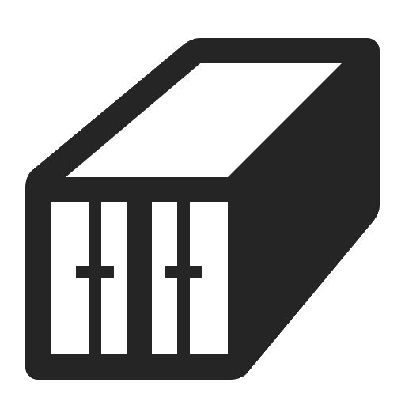

revealed
About Me
Solution & DevOps Architect at Vaduo Consulting
Au menu
- What is Docker?
- How to use Docker?
- Getting started!
What is Docker?
Docker is not...
Virtual Machines
Magic

What is Docker?
Docker creates isolated environnements (called containers) to isolate applications.
How it works?
Docker stands on Linux kernel, Linux namespaces (isolated environments) and on Linux cgroups (resource management memory/cpu/disk)
How it works?

Docker is not Virtual Machines


What is a container? 
It's all about isolation
- Isolated filesystem
- Isolated users
- Isolated process
- Isolated networks
As close as possible to a standard Linux installation...
but runs on the Host's Kernel
Docker images
- An image is like a container snapshot (static/read-only).
- A container is the instanciation of an image.
- Images have base images.
- Images are layered.
- Images are taggued
Docker images

Docker images
- debian:jessie : Contains debian-jessie libs/apps
- buildpack-deps:jessie-curl : Contains curl
- openjdk:8-jre : Contains OpenJdk JRE 8
- tomcat:9.0-jre8 : Contains Tomcat 9
Docker images
user@host:~$ docker images
REPOSITORY TAG IMAGE ID CREATED SIZE
tomcat 9-jre8 345a325b9d4f 2 weeks ago 334.9 MB
openjdk 8-jre b13ebf1a4999 3 weeks ago 311.2 MB
buildpack-deps jessie-curl 187e81a2e1ae 3 weeks ago 167.3 MB
debian jessie 73e72bf822ca 3 weeks ago 123 MB
Docker ecosystem

How to use docker?
How to use docker
Main commands
- docker pull : get an image from the registry
- docker build : create an image from a Dockerfile
- docker create : create a container from an image
- docker run : creates a container from an and starts it
- docker start/stop : starts/stops containers
- docker commit : creates an image from a running container
- docker logs : fetch the logs af a container (stdout/stderr)
Working with images
- docker pull imageName:tag : get an image from the registry
- docker build : create an image from a Dockerfile
Working with images
Building an image from a Dockerfile
Dockerfile : File describing the construction steps of an image
FROM debian:jessie
RUN echo 'deb http://deb.debian.org/debian jessie-backports main' > /etc/apt/sources.list.d/jessie-backports.list
ENV JAVA_DEBIAN_VERSION 8u111-b14-2~bpo8+1
RUN apt-get update \
&& apt-get install -y openjdk-8-jre-headless="$JAVA_DEBIAN_VERSION"
ENV JAVA_HOME /usr/lib/jvm/java-8-openjdk-amd64/jreuser@host:~$ docker build --tag myJRE:1.0 .Working with images
Listing images
user@host:~$ docker images
REPOSITORY TAG IMAGE ID CREATED SIZE
tomcat 9-jre8 345a325b9d4f 2 weeks ago 334.9 MB
openjdk 8-jre b13ebf1a4999 3 weeks ago 311.2 MB
buildpack-deps jessie-curl 187e81a2e1ae 3 weeks ago 167.3 MB
debian jessie 73e72bf822ca 3 weeks ago 123 MB
Working with images
Removing images
user@host:~$ docker rmi tomcat:9-jre8
Untagged: tomcat:9-jre8
Deleted: sha256:345a325b9d4ff4e3ceb5239f706c32f6058111bf101bfab4ea2386aaa9a58afa
Deleted: sha256:edd8f93b163a01e11c701c65cf24373ef0326a40692cf848e963b3c9b56e9619
Deleted: sha256:ad145ed46bd12e51afacbc9313fbf51ea9af1b451434f3761c993c14440aacff
Deleted: sha256:6976e3f3625b4467efa53b04a24fb1a97741b4125291f115ebc79d7a545650d7
Deleted: sha256:66db73f2947c39132e728c6f263ddeef0b9bc3262b4022560eb82bcb1a1f55fb
Deleted: sha256:78780b79263b4913e74e1855dd55f8f2e65ff848fb7582c3c76af88789e55f3a
Deleted: sha256:bd20af890581a5af2c1ab5b4d9ab095833142878600edd91fea639e641129cd9
Working with containers
Running a container from an image
user@host:~$ $ docker run --tty --interactive debian:jessieCreates a container, attaches an interactive shell
user@host:~$ $ docker run debian:jessie echo Docker is funCreates a container, runs the command echo Docker is fun and exits
user@host:~$ $ docker run --rm debian:jessie echo Docker is funCreates a container, runs the command echo Docker is fun and deletes the container
Working with containers
Creating a container from an image
user@host:~$ $ docker create -p 5432:5432 --name myPostgresInstance postgresCreates a container, maps host port 5432 to container port 5432 and names the container
user@host:~$ $ docker start myPostgresInstanceStarts the container
user@host:~$ $ docker start myPostgresInstanceWorking with containers
user@host:~$ $ docker create -p 5432:5432 --name myPostgresInstance postgresuser@host:~$ $ docker start myPostgresInstanceWhere is my data ?

Inside the container filesystem!
Working with containers
Binding filesystem
user@host:~$ $ docker create \
-p 5432:5432 \
-v /data/postgres:/var/lib/postgresql \
--name myPostgresInstance postgresCreates a container, maps host port 5432 to container port 5432 and names the container
The container directory /var/lib/postgresql is mapped to the host directory /data/postgres
Getting started !

Online pratical with Katacoda
Stuff to do on the playground
- Get the tomcat image
- Start the tomcat server listening on port 80
Thank you!
Questions?